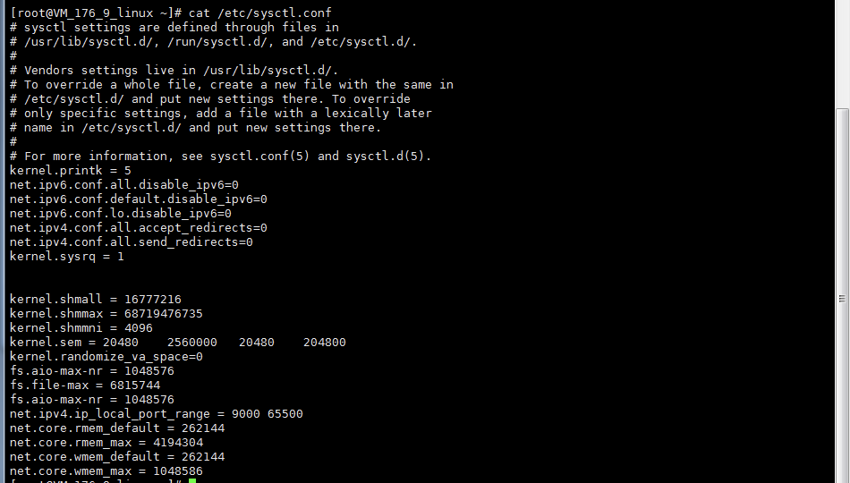
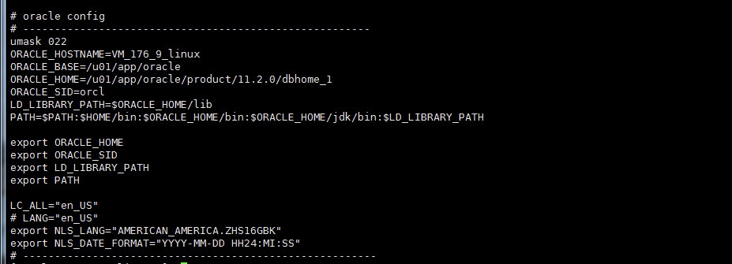
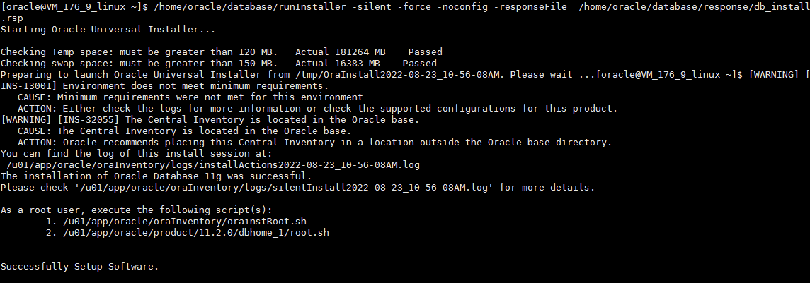
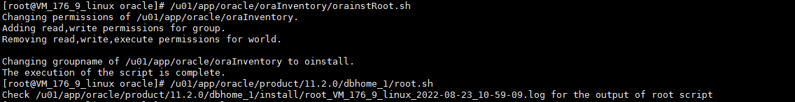
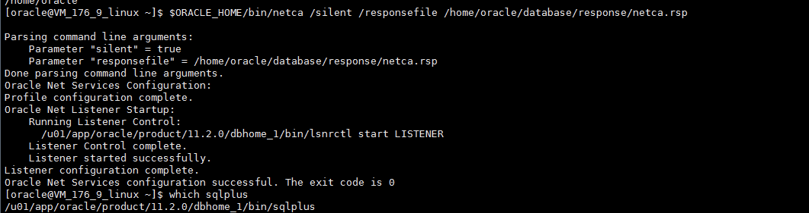
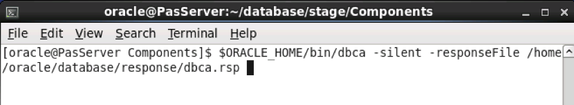
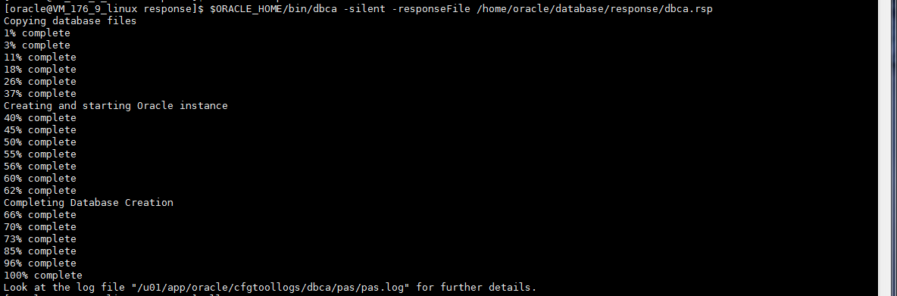
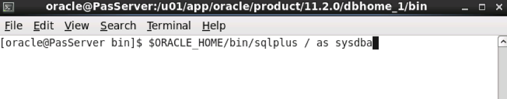
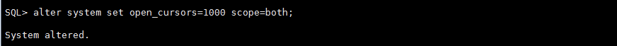

Oracle 数据库Redhat7.4服务器安装Oracle11g数据库，详细实践版本。
版本说明
| 名称 | 版本 |
|---|---|
| 服务器系统 | Redhat7.4 |
| Oracle | 11g Enterprise Edition |
接下来是部署安装的过程，都是重要步骤。
Oracle安装
Oracle用户【root用户】
对于到手的Linux服务器，Oracle存在自主创建或者已经被创建的情况，分别进行操作说明。
情况一：创建用户
1.创建oracle用户组1
2groupadd oinstall
groupadd dba
2.创建oracle用户1
seradd oracle -g oinstall -G dba -m -s /bin/bash
3.设置oracle用户密码1
passwd oracle
情况二： Oracle用户已存在
1.创建用户租
groupadd oinstall
groupadd dba
2.修改oracle用户所属组
usermod -g oinstall -G dba -s /bin/bash oracle
id oracle
出现的结果是oracle用户是属于oinstall、dba2个组
3.把oracle用户目录重新赋予权限：
chown -R oracle:oinstall /home/oracle
Package安装【root用户】
安装所必须的包，执行以下命令：1
2
3yum install binutils elfutils-libelf elfutils-libelf-devel gcc-c++ glibc glibc-common
glibc-devel glibc-headers libaio libaio-devel libgcc libstdc++ libstdc++-devel make
sysstat unixODBC unixODBC-devel
如果服务器没连内网，需要从安装盘安装以上的包。挂截光盘，将系统对应的系统盘插入光驱后，运行以下命令：
1.挂载系统盘1
2mkdir /mnt/cdrom
mount –t auto –o ro /dev/cdrom /mnt/cdrom
2.配置源文件1
vim /etc/yum.repos.d/Server.repo
3.更改配置，在以上文件中输入以下内容：1
2
3
4
5[dvd]
Name=localyum
Baseurl=file:///mnt/cdrom
Enabled=1
Gpgcheck=0
保存退出，在进行yum包安装。
调整OS内核参数【root用户】
设置原则：
kernel.shmmax设为物理内存大小(如果系统已设置了足够大就无需再设置了，参考值为最小需求)1
2
3
4
5
6
7
8
9
10
11
12
13
14
15
16# vi /etc/sysctl.conf
#------------------------------------------
kernel.shmall = 16777216
kernel.shmmax = 68719476735
kernel.shmmni = 4096
kernel.sem = 500 2048000 500 4096
kernel.randomize_va_space=0
fs.aio-max-nr = 1048576
fs.file-max = 6815744
fs.aio-max-nr = 1048576
net.ipv4.ip_local_port_range = 9000 65500
net.core.rmem_default = 262144
net.core.rmem_max = 4194304
net.core.wmem_default = 262144
net.core.wmem_max = 1048586
#------------------------------------------

运行命令使参数立即生效1
sysctl -p
配置PAM模块文件【root用户】
1 | vim /etc/security/limits.conf |
建立必须目录和文件【root用户】
1 | mkdir –p /u01/app/oracle |
建立完之后可以tree以下，如果没有yum tree安装tree命令，用来查看目录树结构，推荐。
设置oracle用户环境变量【oracle用户】
如果服务器有多网卡, 注意设置ORACLE_HOSTNAME为某网卡IP对应的主机名, 参照/etc/hosts文件.
切换到oracle 用户 编辑.bash_profile文件为以下内容。
切换到oracle用户
命令：su - oracle
编辑配置文件
命令如下：1
2
3
4
5
6
7
8
9
10
11
12
13
14
15
16
17
18
19
20$vim /home/oracle/.bash_profile
# --------------------------------------------------
# oracle config
umask 022
ORACLE_HOSTNAME=VM_176_9_linux
ORACLE_BASE=/u01/app/oracle
ORACLE_HOME=/u01/app/oracle/product/11.2.0/dbhome_1
ORACLE_SID=orcl
LD_LIBRARY_PATH=$ORACLE_HOME/lib
PATH=$PATH:$HOME/bin:$ORACLE_HOME/bin:$ORACLE_HOME/jdk/bin:$LD_LIBRARY_PATH
export ORACLE_HOME
export ORACLE_SID
export LD_LIBRARY_PATH
export PATH
LC_ALL="en_US"
export NLS_LANG="AMERICAN_AMERICA.ZHS16GBK"
export NLS_DATE_FORMAT="YYYY-MM-DD HH24:MI:SS"
# --------------------------------------------------
参数说明：
- ORACLE_HOSTNAM：本机名称
- ORACLE_BASE：Oracle安装根目录
- ORACLE_HOME：Oracle软件安装目录
- ORACLE_SID：Oracle SID
- LD_LIBRARY_PATH：Oracle lib包
- NLS_LANG：NLS编码设置，先这么设置，后面有一个拓展 专门说明。

再运行以下命令使配置立即生效。1
source /home/oracle/.bash_profile
配置cvu_config文件【oracle用户】
1.解压Oracle包，进入Oracle解压后目录database/stage/cvu/cv/admin，备份 cvu_config 文件：1
cp cvu_config backup_cvu_config
2.编辑 cvu_config 并且改动以下行内容（添加cvu_config配置信息的时候建议手动输入，复制的时候出现|【不知什么原因】）1
CV_ASSUME_DISTID=OEL4 to CV_ASSUME_DISTID=OEL6
3.保存文件。
配置响应文件【oracle用户】
在ORACLE安装软件的response目录里有各种响应文件模板，我们需要将配置响应文件的参数以匹配当前环境1
2
3
4
5
6
7
8
9
10
11
12
13
14
15
16
17
18
19$ vi /home/oracle/database/response/db_install.rsp
#--------------------------------------------------------------------
# 注意!不要更改以下参数,否则安装会报错!
oracle.install.responseFileVersion=/oracle/install/rspfmt_dbinstall_response_schema_v11_2_0
#以下参数根据实际情况更改,ORACLE_HOSTNAME的值由hostname命令获得
oracle.install.option=INSTALL_DB_SWONLY
ORACLE_HOSTNAME=服务器名称
INVENTORY_LOCATION=/u01/app/oracle/oraInventory
UNIX_GROUP_NAME=oinstall
SELECTED_LANGUAGES=en,zh_CN
oracle.install.db.InstallEdition=EE
oracle.install.db.DBA_GROUP=dba
oracle.install.db.OPER_GROUP=dba
DECLINE_SECURITY_UPDATES=true
ORACLE_HOME=/u01/app/oracle/product/11.2.0/dbhome_1
ORACLE_BASE=/u01/app/oracle
#--------------------------------------------------------------------
各参数含义如下:
-silent 表示以静默方式安装,不会有任何提示
-force 允许安装到一个非空目录
-noconfig 表示不运行配置助手netca
-responseFile 表示使用哪个响应文件,必需使用绝对路径
oracle.install.responseFileVersion 响应文件模板的版本,该参数不要更改
oracle.install.option 安装选项,本例只安装oracle软件,
DECLINE_SECURITY_UPDATES 是否需要在线安全更新,该参数不要更改
ORACLE_HOSTNAME 安装主机名
UNIX_GROUP_NAME oracle用户用于安装软件的组名
INVENTORY_LOCATION oracle产品清单目录
SELECTED_LANGUAGES oracle运行语言环境,一般选en，zh_CN
ORACLE_HOME Oracle安装目录
ORACLE_BASE oracle基础目录
oracle.install.db.InstallEdition 安装版本类型,一般是企业版
oracle.install.db.isCustomInstall 是否定制安装,默认Partitioning,OLAP,RAT都选上了
oracle.install.db.customComponents 定制安装组件列表:除了以上默认的,可加上Label Security和Database Vault
oracle.install.db.DBA_GROUP oracle用户用于授予OSDBA权限的组名
oracle.install.db.OPER_GROUP oracle用户用于授予OSOPER权限的组名
执行安装脚本
【一定要oracle用户执行】【一定要oracle用户执行】【一定要oracle用户执行】
命令：1
./runInstaller -silent -force -noconfig -responseFile /home/oracle/db_install.rsp
其中后面的db_install.rsp为上一步配置的响应文件的路径。

执行成功后会出现以上界面，会提示需要要ROOT用户下执行脚本，然后再回来上图界面按回车完成安装。
运行orainstRoot.sh和root.sh完成安装
【一定要root用户执行】【一定要root用户执行】【一定要root用户执行】
切换到root用户执行脚本。1
2/u01/app/oraInventory/orainstRoot.sh
/u01/app/oracle/product/11.2.0/dbhome_1/root.sh

然后再回到安装界面按回车，提示安装成功，至此数据库已经安装完成。
检查安装文件【root用户】
1.文件一：$ORACLE_HOME/bin/oracle
1 | cd $ORACLE_HOME/bin |
2.文件二：$ORACLE_HOME/rdbms/lib/config.o
1 | cd $ORACLE_HOME/rdbms/lib/ |
确认上面的2个文件大小一定要大于0，不然后面后出现ORA-12547:TNS:list contact。
如果出现上述情况，可以把/u01/app/oracle/oraInventory目录删除，重新进行安装。
PAS数据库安装
静默配置监听程序【oracle用户】
通过response文件运行netca, 生成sqlnet.ora和listener.ora文件, 位于$ORACLE_HOME/network/admin目录下
命令：$ $ORACLE_HOME/bin/netca /silent /responsefile /home/oracle/netca.rsp

如果发生以下错误：1
2
3
4
5
6
7
8
9
10
11
12
13=========================================================
$ORACLE_HOME/bin/netca /silent /responsefile /home/oracle/database/response/netca.rspUnsatisfiedLinkError exception loading native library: njni11
java.lang.UnsatisfiedLinkError: /u01/app/oracle/product/11.2.0/dbhome_1/lib/libnjni11.so: libaio.so.1: cannot open shared object file: No such file or directory
java.lang.UnsatisfiedLinkError: jniGetOracleHome
at oracle.net.common.NetGetEnv.jniGetOracleHome(Native Method)
at oracle.net.common.NetGetEnv.getOracleHome(Unknown Source)
at oracle.net.ca.NetCALogger.getOracleHome(NetCALogger.java:230)
at oracle.net.ca.NetCALogger.initOracleParameters(NetCALogger.java:215)
at oracle.net.ca.NetCALogger.initLogger(NetCALogger.java:130)
at oracle.net.ca.NetCA.main(NetCA.java:427)
Error: jniGetOracleHome
=========================================================
解决方案：
缺少lib包1
2find /u01 -name libaio.so.1
cp /u01/app/oracle/product/11.2.0/dbhome_1/lib/stubs/libaio.so.1 /u01/app/oracle/product/11.2.0/dbhome_1/lib
在执行上述命令，成功
创建PAS数据库实例
配置建库响应文件 dbca.rsp【oracle用户】
打开安装目录下的response文件夹下的dbca.rsp ，修改以下参数1
2
3
4
5
6
7
8
9$vim /home/oracle/database/response/dbca.rsp
GDBNAME = "pas"
SID = "orcl"
SYSPASSWORD = "pas"
SYSTEMPASSWORD = "pas"
SYSMANPASSWORD = "pas"
DBSNMPPASSWORD = "pas"
CHARACTERSET = "ZHS16GBK"
MEMORYPERCENTAGE = "40"
创建数据库实例【oracle用户】
Oracle用户下执行以下命令：1
$ORACLE_HOME/bin/dbca -silent -responseFile /home/oracle/database/response/dbca.rsp
注意,dbca.rsp为上一步配置的响应文件的路径。

待提示成功后，数据库实例创建完毕。

创建数据文件路径
1.创建目录，切换至实例用户窗口中输入如下命令，将下列脚本中的SNPAS批量替换成你的数据库名称，同时需要检查实例目录上否有足够空间的磁盘(真实环境至少剩余空间需要500G以上 df 检查磁盘空间)
【文件位置根据服务器实际空间以及位置进行修改，oracle对目录具有读写权限】1
2
3
4
5
6
7su - oracle
mkdir -p /data/SNPAS/PAS_DATA/PAS_SPACE_DATA
mkdir -p /data/SNPAS/PAS_DATA/PAS_SPACE_IDX
mkdir -p /data/SNPAS/PAS_DATA/PAS_SPACE_TMP
mkdir -p /data/SNPAS/PAS_BACKUP
mkdir -p /data/SNPAS/PAS_DATA_SRC
mkdir -p /data/SNPAS/PAS_ARCH_LOG
2.创建成功之后的目录结构如下：1
2cd /data/SNPAS
tree
创建表空间【oracle用户】
查看当前实例：select instance_name from v$instance;
切换为需要的实例：export ORACLE_SID=SID名称
以管理员身份通过SQLPLUS登录ORACLE
$ ORACLE_HOME/bin/sqlplus / as sysdba

表空间创建
表空间特殊说明：
- 【1.表空间存储目录以上一步建立的路径为准】
- 【2.初始化表空间文件的大小可以为10G，后期自动增长】
- 【3.11g普通表空间文件大小最大32G】
创建TBS_MXZ表空间文件【sqlplus】
1 | SQL>CREATE TABLESPACE "TBS_MXZ" |
创建TBS_NBZZ表空间文件【sqlplus】
1 | SQL> CREATE TABLESPACE "TBS_NBZZ" |
创建TBS_JXDX表空间文件【sqlplus】
1 | SQL>CREATE TABLESPACE "TBS_JXDX" |
创建TBS_JKSJ表空间文件【sqlplus】
1 | SQL>CREATE TABLESPACE "TBS_JKSJ" |
创建TBS_LSB表空间文件【sqlplus】
1 | SQL>CREATE TABLESPACE "TBS_LSB" |
创建TBS_PAS表空间文件【sqlplus】
1 | SQL> CREATE TABLESPACE "TBS_PAS" |
创建TBS_IDX表空间文件【sqlplus】
1 | SQL>CREATE TABLESPACE "TBS_IDX" |
创建TBS_TMP表空间文件【sqlplus】
1 | SQL>CREATE TEMPORARY TABLESPACE TBS_TMP |
表空间说明与配置建议:
| 表空间名称 | 表空间作用 | 表空间大小配置建议 | 备注 |
|---|---|---|---|
| TBS_MXZ | 存放明细账数据 | 100G-200G | |
| TBS_NBZZ | 存放内部总账数据 | 100G以上 | |
| TBS_JXDX | 存放绩效对象数据 | 30G | |
| TBS_JKSJ | 存放接口数据 | 10G | |
| TBS_LSB | 存放临时表数据 | 10G | |
| TBS_PAS | 存放一些基础表的表空间，例如权限、参数、业绩关系、业绩指标、考核方案等 | 30G | |
| TBS_IDX | 存放索引数据 | 30G | |
| TBS_TMP | 临时表空间 |
创建PAS用户【sqlplus】
1 | su - oracle |
以管理员身份通过SQLPLUS登录ORACLE，执行以下命令1
2
3SQL> CREATE USER PAS IDENTIFIED BY pas
DEFAULT TABLESPACE "TBS_PAS"
TEMPORARY TABLESPACE "TBS_TMP";
PAS用户授权【sqlplus】
以管理员身份通过SQLPLUS登录ORACLE，执行以下命令1
2
3
4
5
6
7
8
9
10
11
12
13
14
15
16
17
18SQL>GRANT "JAVAUSERPRIV" TO PAS WITH ADMIN OPTION;
SQL>GRANT "RESOURCE" TO PAS WITH ADMIN OPTION;
SQL>GRANT "DBA" TO PAS WITH ADMIN OPTION;
SQL>GRANT "JAVASYSPRIV" TO PAS WITH ADMIN OPTION;
SQL>GRANT "CONNECT" TO PAS WITH ADMIN OPTION;
SQL>ALTER USER PAS DEFAULT ROLE "JAVAUSERPRIV","RESOURCE","DBA","JAVASYSPRIV","CONNECT";
-- SYSTEM PRIVILEGES
SQL>GRANT CREATE ANY INDEX TO PAS WITH ADMIN OPTION;
SQL>GRANT CREATE ANY TABLE TO PAS WITH ADMIN OPTION;
SQL>GRANT UNLIMITED TABLESPACE TO PAS WITH ADMIN OPTION;
SQL>grant select on SYS.DBA_DATA_FILES to PAS;
SQL>grant select on SYS.DBA_FREE_SPACE to PAS;
SQL>grant select on SYS.DBA_TABLESPACES to PAS;
SQL>grant create session to PAS;
SQL>grant create sequence to PAS;
SQL>grant drop any sequence to PAS;
SQL>grant select any dictionary to pas;
配置数据库参数【sqlplus】
下面是数据库的基本参数建议配置，可根据实际情况按需修改，需以sys用户登录数据库,
$sqlplus / as sysdba;
1.设置SGA大小，建议为物理内存的40%
SQL>alter system set sga_max_size=20G scope=both
alter system set sga_target=20G scope=spfile;2.设置PGA大小，建议为物理内存10%
SQL>alter system set pga_aggregate_target=5G scope=both;
3.设置最大进程数，PROCESSE=1500
SQL> alter system set processes=1500 scope=spfile;4.设置最大游标数OPEN_CURSORS=300
SQL> alter system set open_cursors=1000 scope=both;
部署教程系列
- LINUX+ORACLE部署安装：http://pygo2.top/articles/40987/
- Linux安装JAVA1.7与配置：http://pygo2.top/articles/13502/
- Windows安装JAVA1.7与配置：http://pygo2.top/articles/1151/
- Windows安装Tomcat7与配置：http://pygo2.top/articles/2013/
- Windows安装PLSQL与配置：http://pygo2.top/articles/47618/